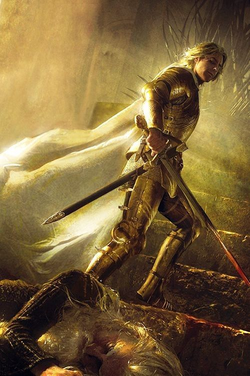
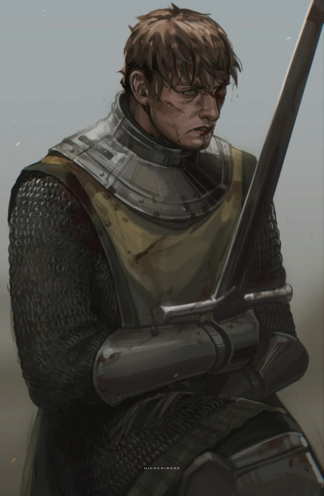
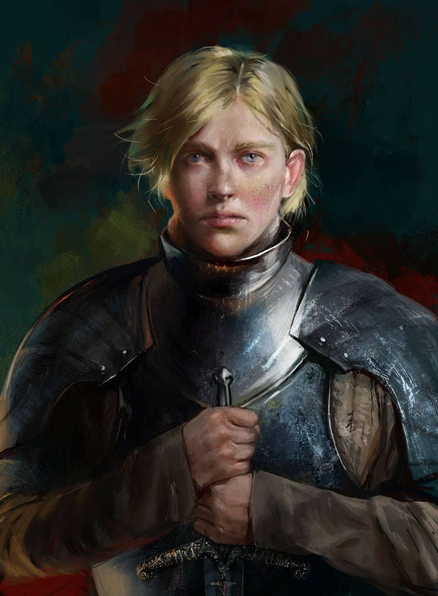

Ser Jaime Lannister, also known as the Kingslayer, is widely praised for his unmatched swordsmanship, yet remains a controversial figure in Westeros, forever walking a moral gray area due to his infamous reputation for dishonor.

Ser Duncan the Tall began as a humble hedge knight wandering Westeros with his young squire, Egg. He would later serve as Lord Commander of the Kingsguard when Egg became king, remembered forever as one of the most legendary and honorable knights in Westerosi history.

Ser Brienne of Tarth is a true anomaly in Westeros, a fierce woman warrior of towering stature and formidable martial prowess. A descendant of Duncan the Tall who is bound above all else to protect the innocent and honor her oaths, she famously bested Jaime Lannister in single combat before he later knighted her.